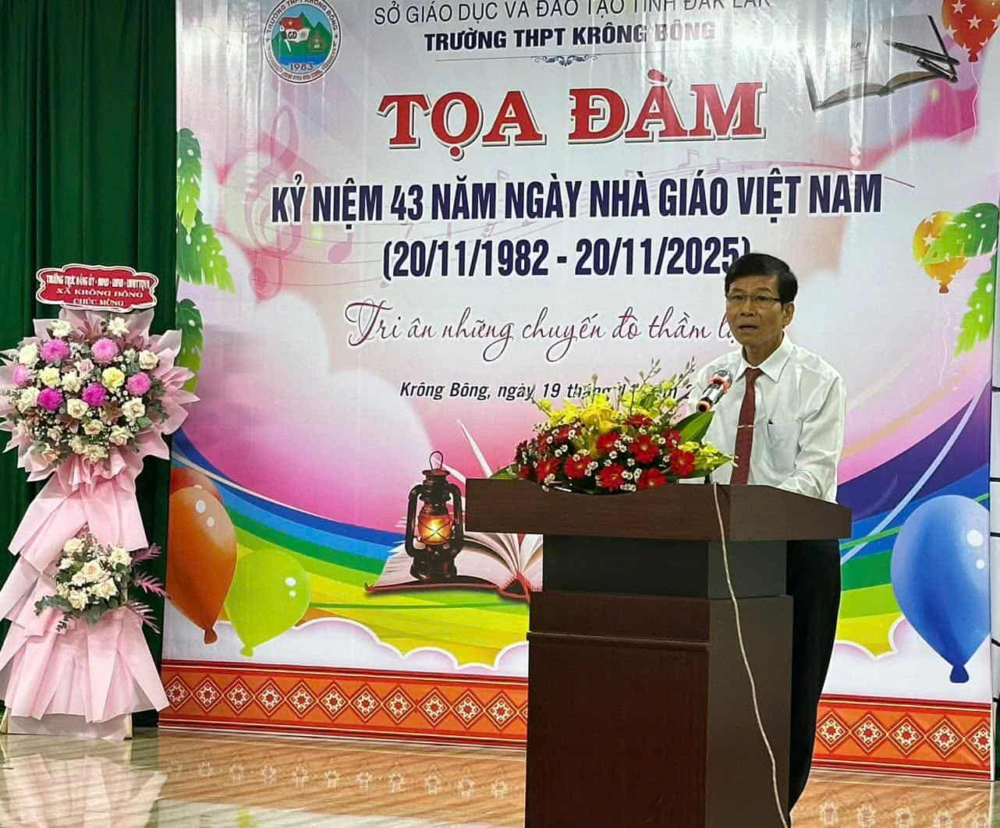
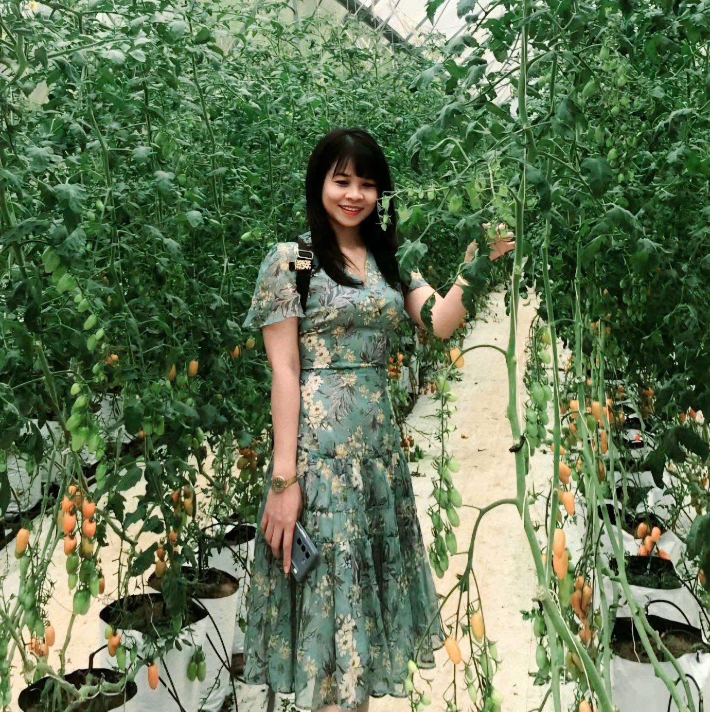
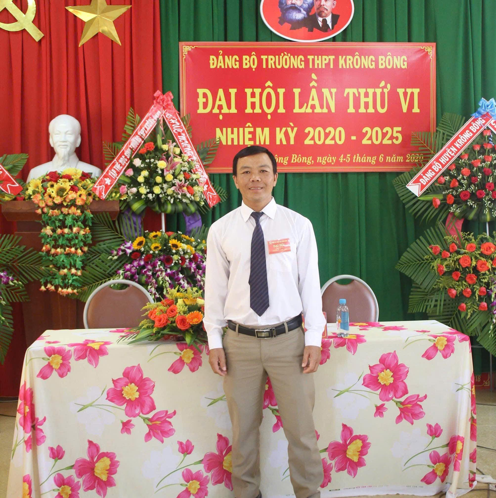
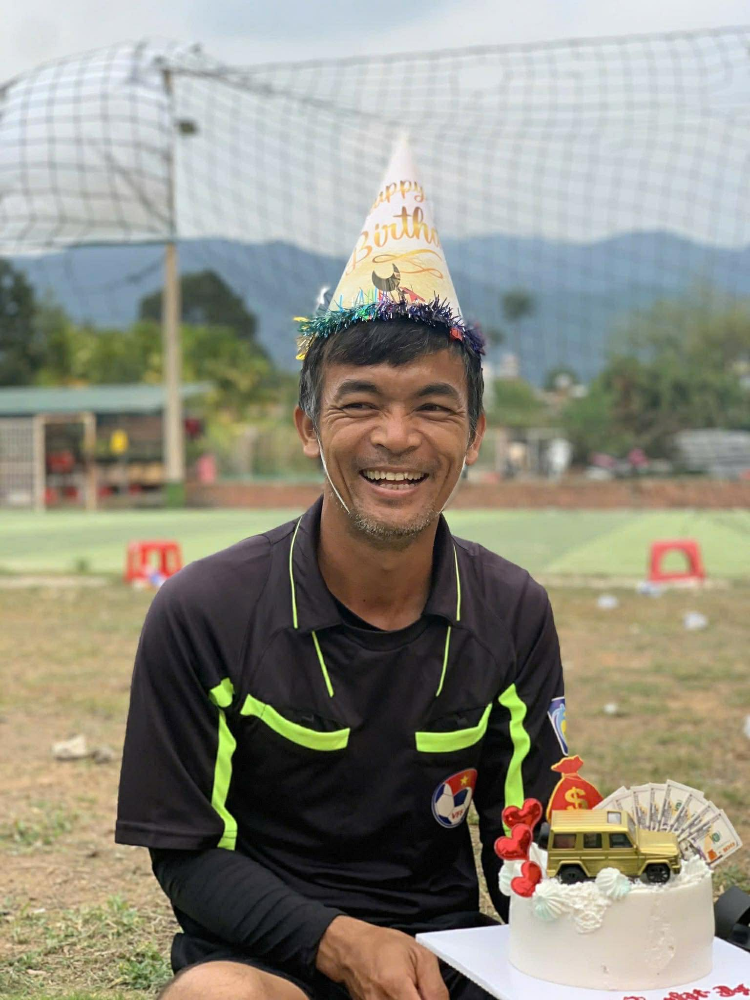
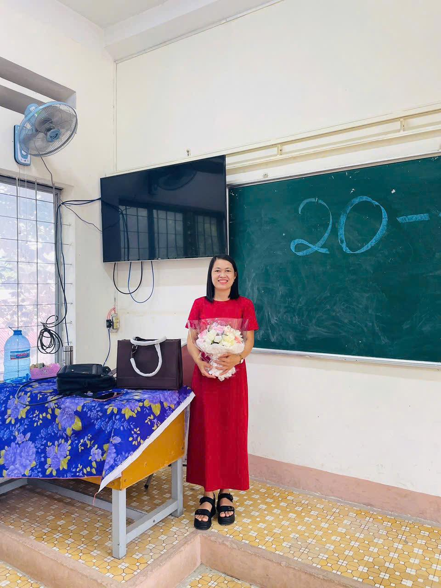

👩🏫👨🏫 Danh sách thầy cô
Những người đã đồng hành, dạy dỗ và giúp chúng em trưởng thành 💛
Thầy: Võ Văn Cường
Thầy hiền từ, có tâm với nghề và luôn tận tình giải thích mỗi khi tụi em “tắc”.Tiết học của thầy lúc nào cũng xen lẫn tiếng cười nhẹ nhàng, giúp tụi em bớt áp lực trong giai đoạn cuối cấp.

Thầy: Phạm Văn Tâm
Là người thầy mang tinh cách hiền hòa, bao dung và yêu thương học sinh. Thầy là giáo viên GDDP và là phó hiệu trưởng đã đồng hành cùng chúng em suốt từ lớp 10 đến 12, luôn nhẹ nhàng hướng dẫn và truyền cho chúng em nhiều bài học quý giá.
Cô: Trần Thị Vĩnh Phương
Cô là người luôn mang đến sự vui vẻ và hứng thú cho mỗi tiết học. Cách giảng bài nhẹ nhàng, dễ hiểu cùng sự tận tâm của cô đã giúp chúng em yêu thích môn Tiếng Anh hơn từng ngày.
Cô: Đậu Thị Ngọc Viên
Cô đã dạy lớp chúng em đầu năm lớp 10. Cô là người vui tính, hòa đồng và cực kì tận tâm.Tiết học của cô lúc nào cũng đầy tiếng cười nhưng vẫn sâu sắc. Cô truyền cảm hứng và khiến tụi em yêu môn Văn hơn rất nhiều.

Cô: Nguyễn Thị Cảnh
Cô là người hiền lành, nhẹ nhàng và luôn thương học sinh. Cô giảng bài dễ hiểu, lúc nào cũng kiên nhẫn, đồng hành cùng chúng em mỗi ngày. Đối với em, cô giống như một điểm tựa êm ái suốt hành trình lớp 11 – 12.
Cô: Thượng Thị Hồng Sinh
Cô là người luôn kiên nhẫn và tận tâm trong từng bài giảng.
Cô giải thích các thao tác máy tính và kiến thức công nghệ một cách rõ ràng, giúp chúng em dễ dàng tiếp thu dù bài học đôi khi khá khó.Đổi lại sự nhiệt tình, cô đã khiến môn Tin trở nên thú vị và gần gũi hơn.
Thầy: Y Khanh Teh
Thầy có chút khó tính và nói khá nhanh, nhưng rất tận tâm với bài giảng.Dù cách dạy nhanh, thầy vẫn giúp chúng em mở mang kiến thức và khuyến khích quan sát, học hỏi thế giới tự nhiên bên ngoài.
Thầy: Đỗ Văn Trung
Thầy Trung của chúng em hơi ít cười nhưng rất tâm lí và trách nhiệm.Thầy giảng bài chậm rãi, dễ hiểu, giúp chúng em hiểu sâu từng kiến thức.
Dù vẻ ngoài nghiêm nghị, thầy luôn âm thầm quan tâm và mong chúng em học tốt môn Sinh hơn mỗi ngày.

Thầy: Trần Thanh Nhật
Thầy là người khá nghiêm tính, nhưng rất nhiệt tình trong công việc.Thầy luôn chỉnh đốn tác phong, kỉ luật, giúp chúng em rèn luyện sức bền, kỉ luật và tinh thần đồng đội.
Thầy: Nguyễn Văn Thịnh
Thầy Thịnh của chúng em không quá khó cũng không quá dễ.Dù thầy ít cười, nhưng sự quan tâm của thầy khiến lớp học trở nên nghiêm túc mà vẫn gần gũi.

Thầy: Nguyễn Văn Minh
Thầy Minh của chúng em hơi khó tính, nhưng chính sự nghiêm khắc đó giúp chúng em rèn luyện nghiêm túc và tiến bộ hơn. Dù thầy ít cười, thầy vẫn luôn tận tâm hướng dẫn và mong chúng em có sức khỏe tốt nhất
Cô: Nguyễn Thị Thúy Nga
Cô đã dạy Sử lớp chúng em vào năm lớp 10.Cô là người nhẹ nhàng, hiền hòa, cực kì dễ hiểu.Cô luôn kiên nhẫn, thân thiện nên tụi em rất dễ lấy điểm cao.

Cô:Nguyễn Thị Sương
Cô dạy lớp chúng em từ lớp 11 đến lớp 12.Tuy bề ngoài nghiêm nhưng lại rất tinh tế và quan tâm học sinh.Cô dạy tận tâm, luôn nhắc nhở chúng em cố gắng cho kì thi cuối cấp. Cô còn thường làm từ thiện, khiến tụi em càng thêm kính trọng.
Cô: Võ Thị Thúy
Cô luôn nhiệt tình và dễ thương, đôi lúc cô có chút khó tính.Cô giảng bài rõ ràng nên những công thức không còn trở nên khó hiểu.Nhờ sự tận tâm của cô, môn Hóa trở nên gần gũi hơn với chúng em.